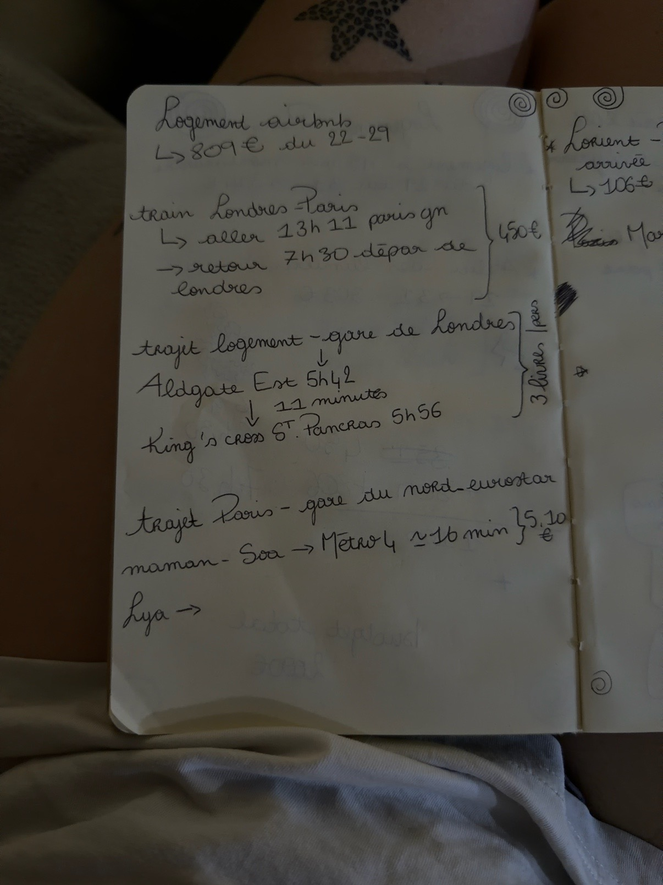
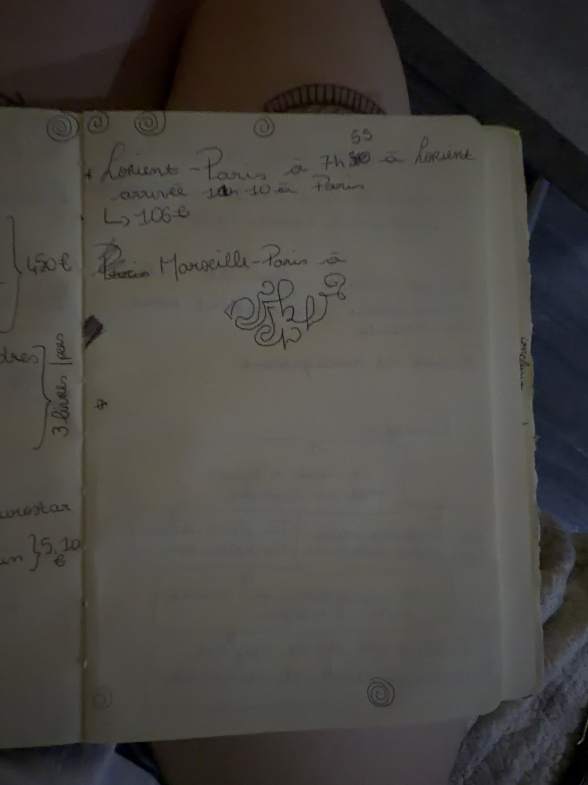

Le voyage en un coup d'œil
J'ai repris uniquement les informations visibles dans ton carnet. Les éléments incertains restent indiqués comme tels : on pourra les compléter au fur et à mesure.
Logement
Airbnb · 22 → 29 octobre
Adresse à ajouter
Eurostar
Paris → Londres
Aller noté : 13h11 · retour : départ 7h30
Lorient → Paris
Trajet noté
Départ 7h30 · arrivée 12h10
3 voyageurs
22 ans · 14 ans · 46 ans
Londres · automne 2026
Le trajet, étape par étape
Une vraie petite feuille de route. Plus tard, on pourra ajouter les références de billets, les quais, les stations et les liens Maps.
Lorient → Paris
Moyen de transport à confirmer d'après le carnet.
Paris → Londres
Gare → logement
⚠️ L'ordre exact de l'itinéraire sera vérifié avec l'adresse du logement.
Londres → Paris
Notre petit chez-nous 🏠
Airbnb
Fiche logement
📍 Adresse complète
🔑 Check-in / check-out
📞 Contact hôte
🚇 Station la plus proche
🧳 Bagages / consigne
📸 Photos du logement
🔗 Lien de réservation
Notre semaine à Londres
Chaque journée est déjà créée : tu me donneras les visites, restaurants, horaires et réservations, et on les placera au bon endroit.
Jeudi 22 · Arrival day ✈️
Trajet vers Londres · installation · première balade.
Vendredi 23 · London day ☕️
À compléter.
Samedi 24 · London day 🎀
À compléter.
Dimanche 25 · London day 🍂
À compléter.
Lundi 26 · London day 🫖
À compléter.
Mardi 27 · London day 🛍️
À compléter.
Mercredi 28 · Last full day 💌
À compléter.
Jeudi 29 · Home sweet home 🚆
Départ du logement · Eurostar retour · retour en France.
Le budget 💷
Les montants actuellement notés dans ton carnet.
Le total est provisoire car l'Eurostar est noté « ≈ 450 € ».
Et maintenant, on complète ✍🏻
Billets
Références, horaires exacts, trains, quais.
Adresses
Logement, cafés, restaurants, visites.
Réservations
Activités, restaurants, attractions.
Pratique
Valise, adaptateur UK, documents, météo.

